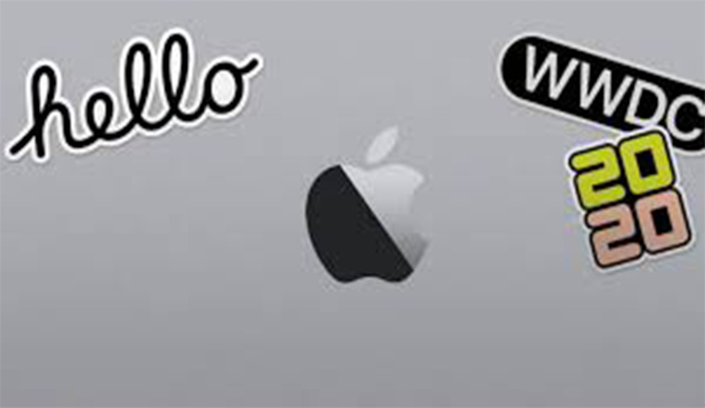

WWDC 2020
¿Qué puede suponer Apple silicon para la industria tecnológica?
- URL del proyecto: MAC OSX
La presentación inaugural de Apple de su conferencia para desarrolladores WWDC 2020 el lunes 22 de junio arrancó con el presidente ejecutivo Tim Cook dirigiéndose a un anfiteatro vacío sobre dos temas importantes: el movimiento Black Lives Matter y el coronavirus. Después de dedicarle unos minutos a estos temas, Cook anunció el sistema operativo iOS 14, que presenta el rediseño de su pantalla de inicio y nuevos widgets. También hizo anuncios de iPadOS 14, MacOS 11 Big Sur, TV OS y WatchOS 7. Las betas públicas se desplegarán el próximo mes y las versiones para consumidores se lanzarán en el otoño.